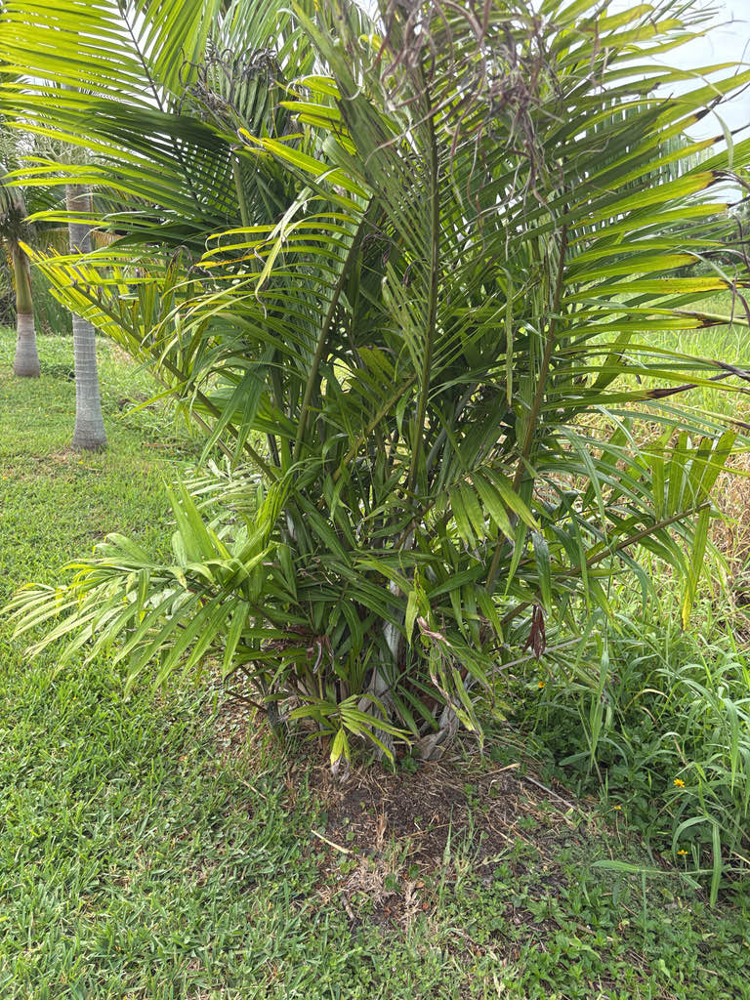

- The trunks are the giveaway: smooth, pale green, and so evenly ringed with leaf scars that they look almost like bamboo canes. Mature clumps also develop a distinctive swollen foot at the base, where the stems flare outward before rising.
- The wild population has been estimated at only about 3,000 trees, all confined to one forest on Pemba Island. The species is classified as Vulnerable, making cultivated specimens a meaningful living reservoir for an exceptionally rare palm.
- Almost every other member of its large Madagascar-centered palm group is native to Madagascar and nearby islands. The Pemba Palm is the remarkable outlier, found naturally only on Pemba Island off the coast of Tanzania.
- The trunks have been put to surprisingly practical use on Pemba — one botanical account records them being fashioned into a football goal near Ngezi Forest, making this perhaps the only palm in the world documented as sporting equipment.
The Pemba Palm is endemic to Pemba Island, a small island in the Zanzibar Archipelago off the coast of Tanzania in eastern Africa. It is known only from Ngezi-Vumawimbi Forest Reserve, where it grows in moist evergreen lowland and littoral (coastal) forest at elevations up to roughly 165 feet above sea level.
Almost every other member of the genus Dypsis — a large group of well over 150 species — is native to Madagascar or its outlying islands. The Pemba Palm is the notable outlier, separated from its closest relatives by several hundred miles of open ocean and native only to this one small island off the East African coast.
The species was originally described as Chrysalidocarpus pembanus by H.E. Moore in 1962, then transferred to the genus Dypsis by botanists Beentje and Dransfield in 1995.
Following a 2022 phylogenomic study that reorganized the group, Kew's Plants of the World Online now accepts Chrysalidocarpus pembanus as the current name, with Dypsis pembana treated as a synonym — though the latter remains widely used in horticulture and botanical collections.
In Florida, the Pemba Palm has found a comfortable second home. It is well-suited to warm subtropical and tropical climates, and its combination of tropical elegance, manageable size, and relative toughness once established has made it a sought-after ornamental in South and Central Florida landscapes and collections.
- To identify this palm in the field, start with the trunks: smooth, prominently ringed, pale green to grey-green — bamboo-like in both color and proportion. Look for the pronounced swelling at the base of the clump (the foot), where the stems flare outward before rising, then scan upward to the arching, waxy fronds with their slight silver cast.
- If the palm is fruiting, vivid red oval drupes clustered near the crown base clinch the identification.
- The Pemba Palm is a clustering species by nature, sending up new stems from a shared base over time. Individual plants in cultivation occasionally grow as a single stem, but true clumps are far more common. The palm is naturally self-cleaning, with old leaf bases dropping away to leave the ringed trunks clean and uncluttered — a feature as useful poolside as it is ornamentally striking.
- The IUCN Red List classifies this species as Vulnerable under criterion D2 — meaning the species qualifies not because of declining numbers per se, but because its entire wild population is concentrated in so small an area that any localized catastrophe poses a genuine extinction risk. With roughly 3,000 wild individuals confined to one forest, the species teeters on a narrow geographic edge.
- A 2024 botanical survey — the first comprehensive one in 35 years — confirmed the presence of previously unrecognized endemic and threatened plant species in that same reserve, suggesting the forest holds more than scientists yet fully understand.
In its native Ngezi Forest, the fleshy red fruits are likely dispersed by fruit-eating birds and mammals, although species-specific dispersal records are limited. Pemba Island is also home to the endemic Pemba flying fox, an important fruit-eating species whose role in dispersing this particular palm has not been clearly documented.
In Florida cultivation, the palm's wildlife value is modest but real. The small, branched inflorescences can attract pollinating insects, and ripe fruit may be taken by birds. Because the Pemba Palm has no co-evolutionary history with Florida's fauna, it does not serve as a larval host for local butterflies or moths.
Visitors looking for active butterfly habitat will find it among the park's native plantings.
The palm reproduces by seed, while established clumps also expand vegetatively by producing new stems from the base. Fresh seed germinates relatively slowly — typically three to four months under good conditions. Seed is the primary method of propagation; established clumps can also be divided.
The branched inflorescence is borne on a peduncle roughly 2 feet long, emerging from between the leaf bases. Flowers are small and not individually showy; the inflorescence stalk may lengthen by up to 40 percent as fruits develop.
Oblong-oval drupes, ripening to a rich red. They are ornamentally attractive. In the wild, fruits are likely dispersed by birds and fruit bats.
Pinnate (feather-shaped), arching, and waxy green with a subtle silvery cast. The leaf rachis reaches up to roughly 3 feet long, carrying 40 to 50 leaflets on either side. Fronds arch outward and slightly downward near the tips, giving the crown a graceful, open form.
Slender and cane-like — pale brown to green, prominently ringed with clean leaf-scar bands spaced up to roughly 9 inches apart. Individual stems range from about 2¼ to 6 inches in diameter. Old leaf bases drop away on their own, revealing smooth, glossy rings without any need for manual trimming. Mature clumps develop a pronounced swelling (the foot) at the base of the trunk cluster.
Look at the base first: a healthy Pemba Palm usually shows multiple slender, ringed stems rising from a shared base, with a noticeable bulge where they meet the ground. The stems themselves are the most immediately distinctive feature — smooth, cleanly banded with leaf scars, and reminiscent of a green bamboo cane more than a typical palm trunk.
Because the old leaf bases fall away on their own, the trunks stay uncluttered and the rings stay visible. Scan the crown for the arching, waxy fronds with their slight silver sheen. If the palm is fruiting, look for the small, vivid red oval drupes clustered near the base of the frond canopy.
No toxicity has been documented for this species or its close relatives in the genus Dypsis. The fruit is not a recognized food and not known to be eaten, but it is not considered poisonous — it is simply not a food item. The palm is otherwise harmless.
The species name pembana is straightforwardly geographic — it simply refers to Pemba Island, the only place on Earth where this palm grows wild. That directness is fitting: few plants wear their origin quite so literally in their name.
The Pemba Palm has had an unusual taxonomic journey. It was originally described as Chrysalidocarpus pembanus in 1962, moved into Dypsis in 1995, and is now placed back in Chrysalidocarpus by Kew following modern DNA-based phylogenomic research. Dypsis pembana remains the name most visitors are likely to encounter in horticulture and botanical collections.
One botanical account records trunks of this species being used to construct a football goal near Ngezi Forest — arguably one of the more unexpected uses on record for a palm now prized almost purely as an ornamental.
Its presence in botanical gardens and cultivated collections provides an important living reservoir for a species with an exceptionally small wild population. That makes the palm in front of you an unusually rare plant to encounter in a Florida garden.

- © Randall Carter (CC-BY-NC), via iNaturalist